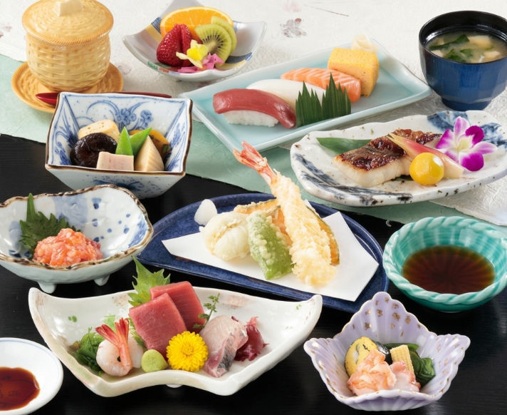

Yoroi Sushi (よろい寿司)
Cuisine: Sushi | Diet: Non-Halal, Non-Vegan
An authentic Japanese sushi restaurant. Offers both counter and table seating, making it highly recommended for both romantic dates and family gatherings.
Signature: Itamae Omakase 5-piece Sushi (¥2,750 / Approx. RM70)
Budget Range: ¥5,000 (Approx. RM125) per person
Required Deposit: ¥1,500
Book Now